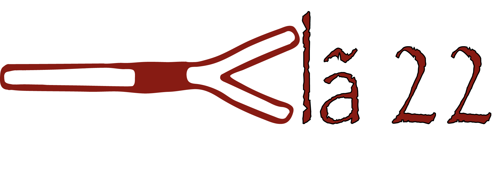

BEM VINDOS ! ! !

Esta é a página oficial do Clã 22, aqui iremos postar das mais diversas informações sobre nós, o que fazemos anualmente ou até mesmo mensalmente.
Poderás a ficar a saber mais sobre nós, neste mesmo site, só basta explorares por ai e te divertires connosco.
Esperamos que te divirtas e sentias bem neste nosso novo site!
QUEM SOMOS?
O Clã 22 faz parte do agrupamento de escuteiros de Pernes, o 1159-Pernes. O Clã 22 baseia-se na IVª Secção do CNE, denominada de caminheiros.
O Clã 22 abriu este ano com o inicio do ano escutista de 2017/2018, abriu passado muitos anos depois do seu fecho trágico. Todos os escuteiros do agrupamento de Pernes, virá com grande ânimo a reabretura do Clã.
Atualmente o Clã é composto por 6 elementos, 1 rapariga e 5 rapazes, tendo eles uma chefe. Cada elemento do Clã tem diferentes funções, comeando por haver um guia sendo a pessoa que orienta o seu grupo, neste caso o Clã.